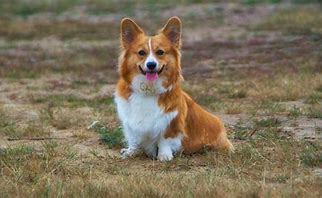

- Utilidad
- Esta raza se utilizó para el pastoreo. A los campesinos pobres de aquella época se les dejaba pastorear en los campos abiertos de la Corona, esta ausencia de cercos ponía en riesgo al ganado de perderse o dispersarse y hacía necesario a un perro rápido, inteligente y que pudiera desplazarse sin problemas entre el ganado. El Pembroke es este tipo de perro, el que empuja al ganado por los talones. Su poca altura le permitía correr por debajo del ganado sin recibir patadas. Ha evolucionado como animal doméstico, y es la raza favorita de la familia real británica. Es un compañero constante y un guardián excelente.
- Salud
- El corgi promedio tiene una altura de 25 a 30 cm, una longitud de 30 a 38 cm y un peso de 11 a 14 kg. Su esperanza de vida es de 12 a 14 años. Es un perro sumamente activo, pero la tendencia a tenerlos como mascotas en hogares pequeños reduce su actividad. Si a esto se le agregan excesos en su alimentación llevaran rápidamente a la obesidad. Un perro promedio requiere de 150 a 300 gramos de alimento comercial equilibrado por día. Una característica bastante común del corgi es su voracidad, que lo lleva a comer en demasía lo que da la sensación de que nunca está saciado; debe limitársele la ingesta de alimentos. Por la longitud de su columna vertebral son particularmente sensibles al sobrepeso, el cual puede producir osteoartritis, que reduce su esperanza de vida y la calidad de la misma. Esta raza también tiene tendencia a la displasia de cadera (de origen poligenético), a las cataratas, displasia de retina, enfermedad de Von Willebrand y mielopatía degenerativa.
- Aspecto general
- Aunque los Cardigan y los Pembroke son parientes, su descripción de raza varía. El Pembroke es de talla pequeña, fuerte, de constitución robusta, alerta y activo, que da la impresión de fortaleza y vigor en un cuerpo pequeño. La cabeza recuerda por la forma y la apariencia a la del zorro, con una expresión alerta e inteligente. La cola es corta, preferiblemente natural, cuando los cachorros no nacen rabones la cola se amputa casi completamente. Cabe destacar que en algunos países europeos, como Suecia, esta práctica de amputar o cortar rabos ha sido prohibida por considerarse una mutilación sin función zootécnica. El pelo es medianamente largo y liso, de varios colores como rojo, azabache, beige o negro y fuego, usualmente con manchas blancas.
- Origen
- Se cree que las dos variedades corgi descienden del perro de los visigodos que introdujeron los vikingos en Gales hacia el siglo IX. O puede ser que el corgi galés de Cardigan sea la variedad más antigua, que introdujeron los celtas en Gales alrededor del año 1200 (el nombre "corgi" proviene de la palabra celta "cor gi" que significa "perro enano"). Según otras fuentes, la variedad Pembroke fue traída a Gales por los tejedores flamencos en el siglo XII. Independientemente de cuál fuera el origen de la raza, el Welsh Pembroke corgi se desarrolló en Pembrokeshire y se le utilizó para guiar al ganado mordisqueando sus garrones ladrando. Las variedades Pembroke y Cardigan se cruzaron entre sí libremente hasta la década de los 30. A partir de entonces, los criadores trataron de acentuar sus diferencias. En 1934 fueron reconocidas oficialmente como dos razas separadas.